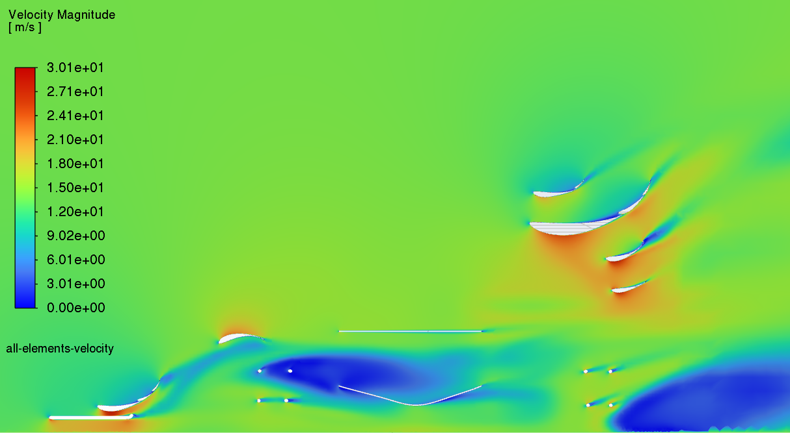
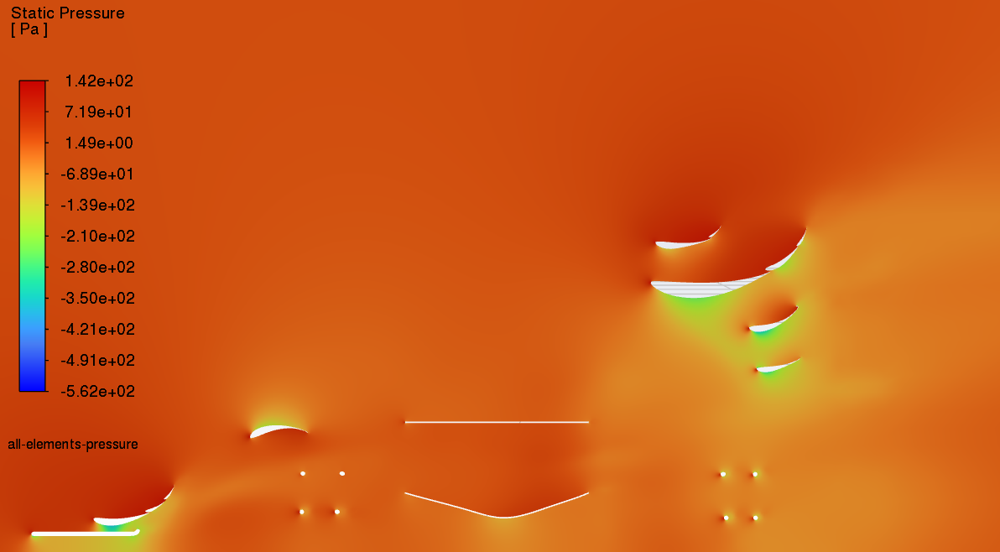

Front & rear wing design
For the '26-'27 competition year, I have been in charge of designing and manufacturing the front and rear wings for Flame 5. This was done via extensive modeling, simulating, and analyzing to determine how to continually improve the performace of the wings. The final coefficients of lift and downforce were -1.2 and 1.0 respectively.
Tools used for CFD and the Aero Map:
Gallery
Placeholder — CAD renders & photos to come

Design process
Airfoil selection & 2D theory
Running 2D simulations on various combinations of airfoils to determine the optimal combination of geometries, sizes, angles of attack, and slot gaps.
3D modeling in SolidWorks
Sketches of airfoil profiles were extruded, endplates were added, and models were added to a bluff body model of the whole car.
Components designed for Flame 5 included the front wing, the rear wing, and whiskers on the sides of the nose cone to clean up airflow to the rear wing and to direct air more smoothly over the radiator and oil intercooler.
CFD validation in ANSYS Fluent
3D sims of the whole aero package were run in ANSYS Fluent to determine coefficients of lift and drag. Contours were plotted on planes running the length of the car to understand how each component interacted with the rest of the car.
3D aero map
Once the aero package's design was finalized, a full aero map (yaw vs speed vs turn angle) was plotted using sims run in ANSYS Fluent, collecting data in Excel, and interpolating & graphing that data in MATLAB.
Below is an interactive version of that same aero map — simply input three values within the parameters and see how Flame 5 performs.
Interactive aero map
Placeholder — embeds once the sweep is completeThis section will hold an interactive 3D aero map: query lift and drag coefficients across yaw, speed, and front wing ride height, built from the Fluent CFD sweep and MATLAB interpolation pipeline.
Cross-section flow visualization
Placeholder — video/slideshow to comeAn interactive slideshow moving through cross-section planes of the full car, showing how the front and rear wings shape the flow field around the whole vehicle rather than in isolation.
Notes along the way
- Yaw angle isn't the same as turn radius — the correct CFD input (sideslip angle β) depends on both speed and turn radius together, via a bicycle model.
- Oscillating CFD residuals don't always mean the solver failed — at FSAE Reynolds numbers, a bluff body can genuinely have no steady-state solution.
- A single-variable sweep can't support a 3D interpolated map — a full factorial design is needed to capture how variables interact.